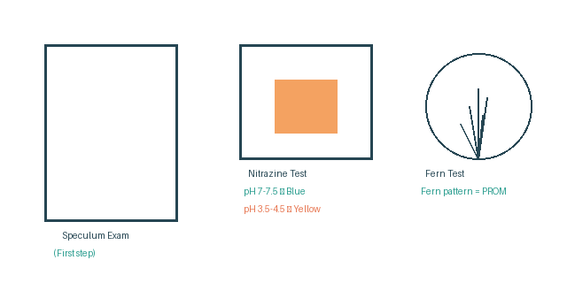

Diagnosis of PROM
Speculum Examination
It is the first step in the diagnosis of PROM to demonstrate leaking of fluid.
Nitrazine Test
pH of amniotic fluid = 7 to 7.5
pH of vaginal discharge = 3.5 to 4.5
Yellow nitrazine paper → turns blue = alkaline amniotic fluid (PROM confirmed). Remains yellow = no amniotic fluid.
Fern Test
Fluid from the posterior vaginal fornix is swabbed on a glass slide and allowed to dry for 10 minutes.
If on drying, fern pattern appears → amniotic fluid is present (PROM).
Ultrasonography
Oligohydramnios or anhydramnios.
Fetal Fibronectin Protein
A glycoprotein present in large amounts in amniotic fluid. Can be detected in 39% of females with PROM by ELISA test.
